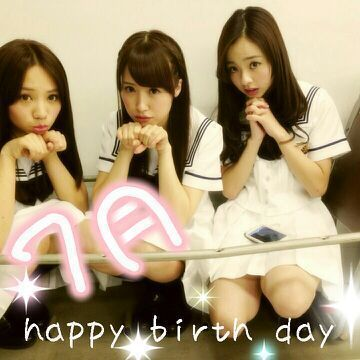
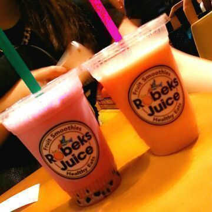
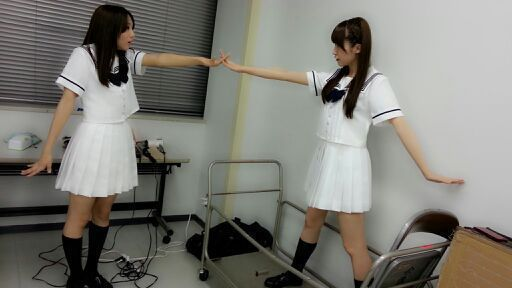

はあい♪
Rotty☆だよぉ〜＼(^o^)／
そ−いえば☆
皆さん、こないだの七夕は
何かお願い事をしましたか？
書きましたか？
それにしてもさあ
最近また急に夏に
ぐぐぐいーーんっ(*゜▽゜*)
と近づいた気がするねぇ〜
でも 夏いやじゃないよぉ〜＼(^o^)／
夏は 海とかキレイだしね−
そんな 暑い夏 7月生まれの
皆さんにっ、、、
happy birth day(^_-)−☆

7月生まれの皆さんには〜
この３人の写メをプレゼントだぉ☆ミ
そして、横浜の個別握手会が
完売しました。
嬉しいです！
ありがとうございます(*^^*)
でも もっともっともっと
たくさんの方と握手をして
コミュニケーション
とりたいです(〃ω〃)
こないだの名古屋の全握で
初めて握手した方とも
あれきりだと寂しいから
もっともっと お互いに
お話がしたいなぁ〜(´・ω・`)
と思ったりしちゃう...
だから また握手しようねっ(*´ω｀*)？
初めての方も 全然来てほしいです♪
待ってます(`・ω・)
ぴょん♪
これは、あにあに と まにまに
の大切な 水分補給だよ(*´∇｀*)

紫のブルーベリー系のが 私で
オレンジのマンゴー系かな？が
あにあに。
ではでは (´ω`)ノシ
